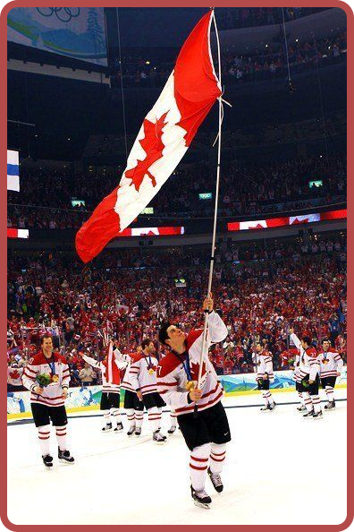
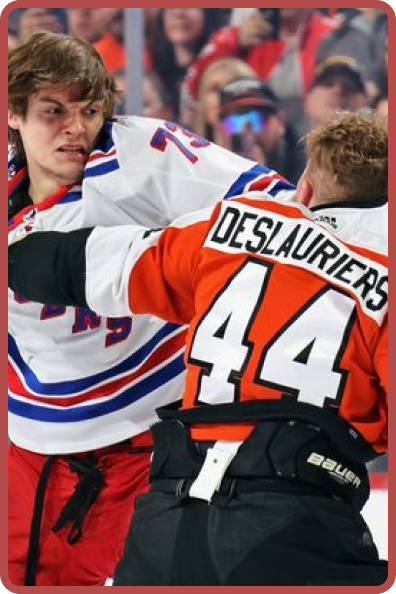

A NHL (National Hockey League) é a principal liga de hóquei no gelo do mundo e tem muitas curiosidades fascinantes que mostram a riqueza de sua história e cultura

Fundada em 1917
A NHL foi criada em 1917 em Montreal, Canadá. Inicialmente, tinha apenas quatro equipes, todas canadenses. Os times americanos começaram a entrar na liga na década de 1920.
Taça Stanley
O troféu da Stanley Cup, dado ao campeão da NHL, é o mais antigo troféu esportivo ainda em uso na América do Norte. Ele foi concedido pela primeira vez em 1893, antes mesmo da fundação da liga.

Regra do Jogo de Luvas no Gelo
Existe uma regra não escrita na NHL: se dois jogadores decidem lutar, eles devem primeiro tirar as luvas antes de trocar socos. Apesar de polêmicas, as brigas são toleradas como parte da "tradição" do esporte.
Primeira Transmissão de TV em 1933
A NHL foi uma das primeiras ligas esportivas a ser transmitida pela televisão, começando em 1933 no Canadá. A popularidade cresceu exponencialmente com a exibição dos jogos.
.png)